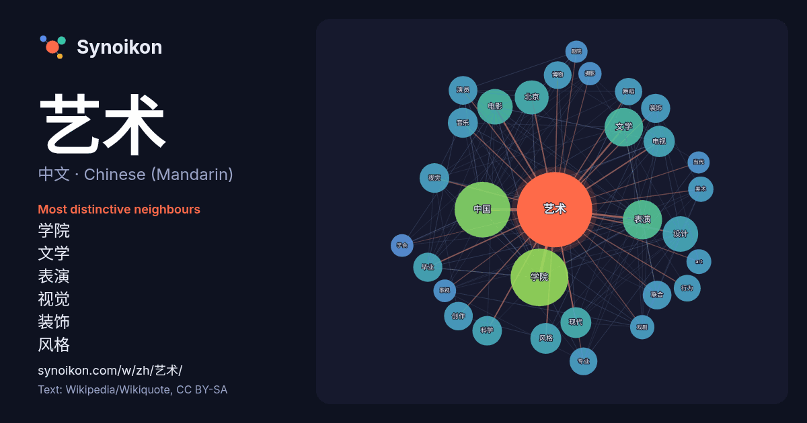

中文 · Chinese (Mandarin) · popular word
艺术
“art” · The words found around it in 1307 instances from Chinese (Mandarin) Wikipedia, Wikiquote.

Most distinctive neighbours
- 学院 51×
- 文学 40×
- 表演 33×
- 视觉 30×
- 装饰 28×
- 风格 25×
- 演员 25×
- art 23×
- 毕业 23×
- 舞蹈 22×
- 现代 22×
- 电影 22×
- 美术 21×
- 创作 21×
- 博物 21×
- 戏剧 20×
- 中国 20×
- 电视 20×
- 专业 19×
- 北京 19×
× = how many times more often than in general Chinese (Mandarin) Wikipedia text.
Most frequent neighbours
- 学院 130
- 中国 121
- 表演 60
- 文学 58
- 作品 53
- 电影 49
- 设计 49
- 北京 45
- 大学 44
- 文化 44
- 学校 41
- 中心 39
- 建筑 38
- 电视 38
- 现代 37
- 风格 37
- 人民 36
- 形式 36
- 运动 36
- 音乐 35
In context
- 一般來說，根据表现手段和方式的不同，艺术可分为 表演艺术（音乐、舞蹈、戏剧等） 视觉艺术（绘画、雕塑、建筑等） 语言艺术（文学等） 综合艺术（電子遊戲、电影、电视、歌剧、音乐剧等） 比較新的分法，則根据时空性质将艺术分为： 时间艺术 空间艺术 综合艺术 下列是常見的藝術類別 建築 文學 音樂 舞蹈 戲劇 Wikipedia snippets · 艺术
- 有人會將當代藝術代指目前這個時代正在實踐中的藝術風格，另外一個是指從1960年代後期開始到現在21世紀的藝術。在後者的词义表达中，當代藝術也可以理解為後現代藝術，或者說有意識反對現代主義信條的藝術，而波普艺术正是当代艺术与现代艺术的分界线。然而，由於「後現代」可以指一個歷史時期，也可以是指一種藝術 Wikipedia snippets · 當代藝術
- 2002年，山东艺术学院聘彭丽媛为客座教授。2004年9月，中国音乐学院也聘请她为该校的客座教授。 2005年9月，应联合国成立60周年组委会邀请，彭丽媛在美国纽约林肯艺术中心首次演出中国歌剧《木兰诗篇》，获得林肯艺术中心艺术委员会颁发杰出艺术家奖。 Wikipedia snippets · 彭丽媛
- 2026年亚洲运动会体操比赛是第20届亚洲运动会的一个大项，共分为竞技体操、艺术体操、蹦床三个分项，在日本爱知县名古屋市綜合體育館举行。 其中竞技体操于9月21日至25日举行，共产生14枚金牌（男子8枚、女子6枚）；艺术体操于10月1日至3日举行，共产生团体和个人全能2枚金牌；蹦床于9月26日至27日举行，共产生2枚金牌（男女各1枚）。 Wikipedia snippets · 2026年亚洲运动会体操比赛
- 白鹿（1994年9月23日—），本名白夢妍，出生于江苏省常州市，中國大陸女演員、模特。於2024年艺术系列评审工作中，荣获三級演員稱號。 白鹿自十三、四歲起因為看韓劇萌生去韓國做練習生的想法。 2012年，在媽媽陪同下前往上海參加韓國SM娛樂海外練習生選秀，但沒有舞蹈基礎而落選了，落選後轉而從事模特 Wikipedia snippets · 白鹿 (演員)
- 江西财经大学位于江西省南昌市新建区蛟桥街道，是一所财政部、教育部、江西省人民政府共建，以经济、管理类学科为主，法、工、文、理、艺术等学科协调发展的高等财经学府。 江西财经大学是“中西部高校基础能力建设工程”高校之一(2012)、江西省一流学科建设高校(2021)、国家“111计划”（高等学校学科创新引智计划）入选高校(2026)。 Wikipedia snippets · 江西财经大学
- 约翰·羅斯金（英語：John Ruskin，1819年2月8日—1900年1月20日）是英国维多利亚时代主要的艺术评论家之一，也是英国艺术与工艺美术运动的發起人之一。他还是一名艺术赞助家、制图师、水彩画家和杰出的社会思想家及慈善家。 他写作的题材涵盖地质到建筑、神话到鸟类学、文学到教育、园艺学到政 Wikipedia snippets · 约翰·拉斯金
- 巴洛克艺术簡稱巴洛克（義大利語：Barocco、西班牙語：Barroco、法語：Baroque、英語：Baroque）是對欧洲17世纪时流行艺术的總稱，巴洛克的作品有大量使用金色的特徵，在邊框上和內容中擇一留白，在能放入裝飾的地方尽量放入方形、圓形、三角形等幾何圖形的規則裝飾，常飾以茛苕，充滿嚴肅 Wikipedia snippets · 巴洛克艺术
More Chinese (Mandarin) words
Precomputed on 2026-10-09 with default settings (±5 words, medium corpus). The interactive map can refresh it with live data.